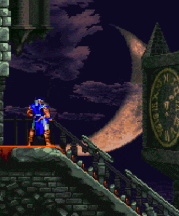
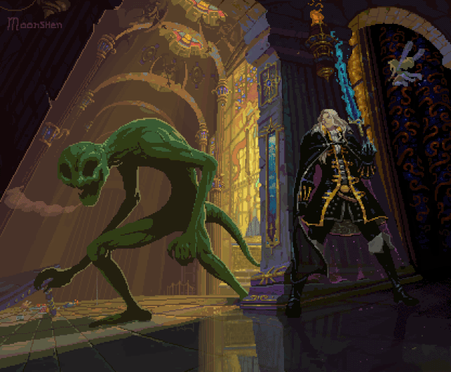
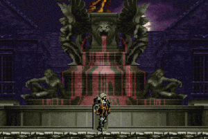
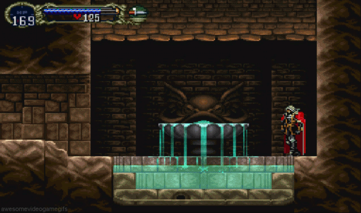
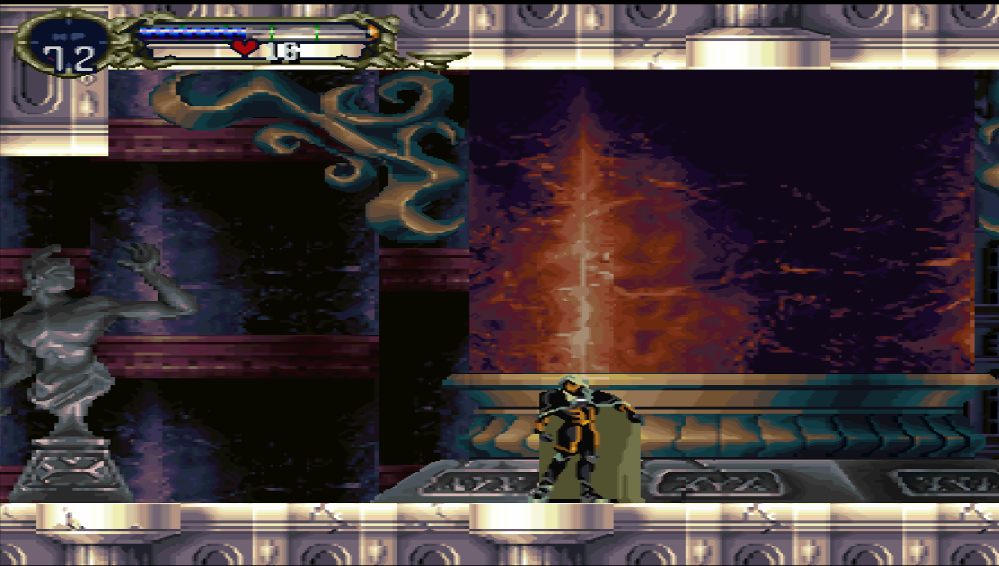
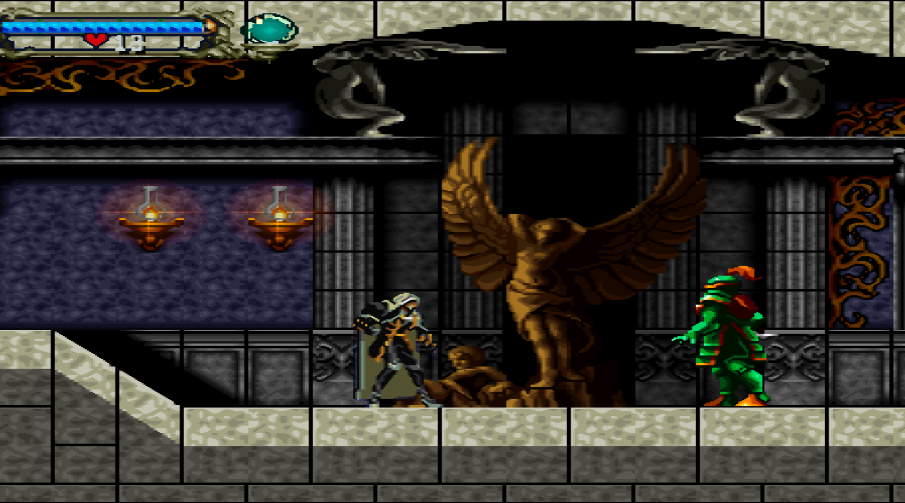
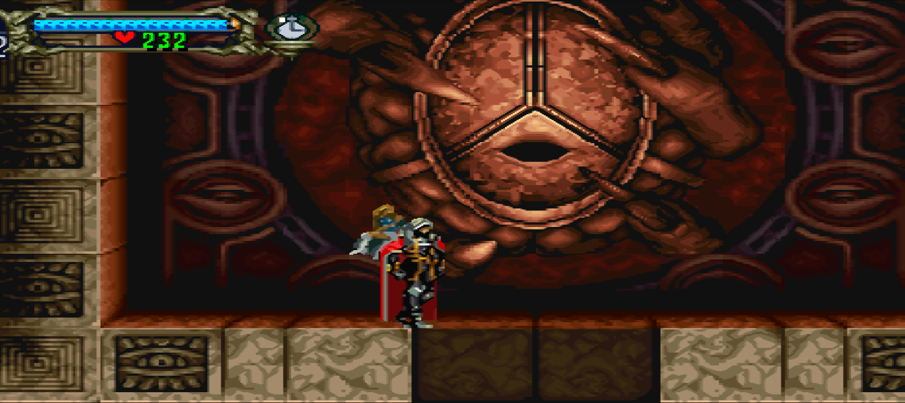
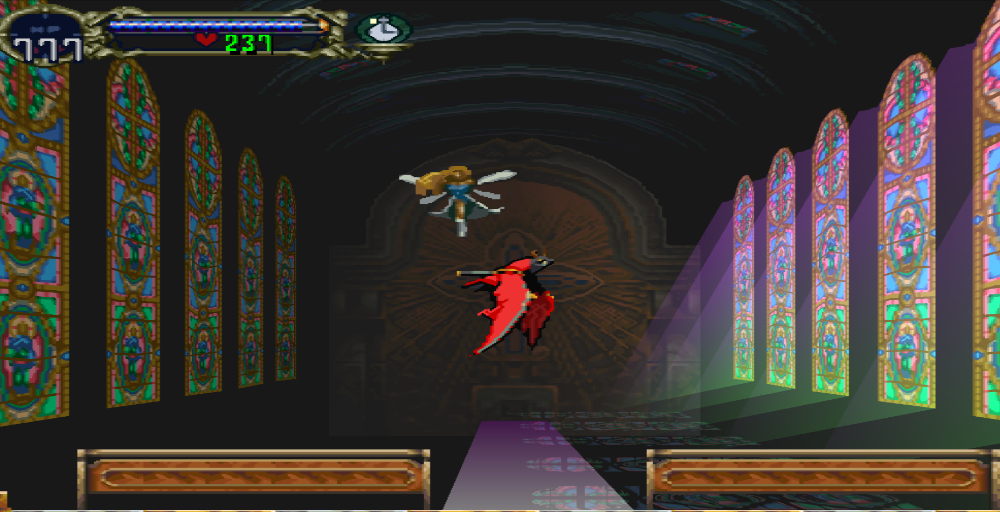
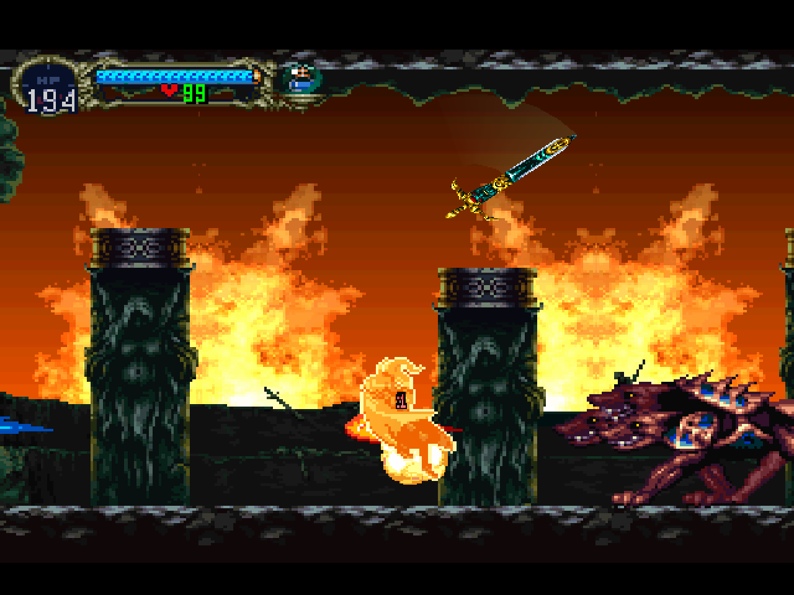
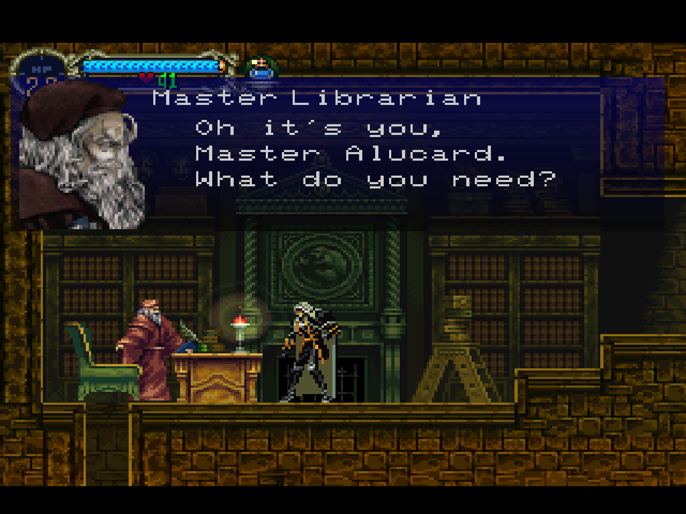

Prologo
The festival of Servant
Crystal Teardrop

Dracula's Castle

Waltz of the Pearls
Wandering Ghosts
Golden Dance
Marble Gallery
Gates of Hell
Requiem of the Gods
Abandoned Pit
Master Librarian
Symphony of the Night